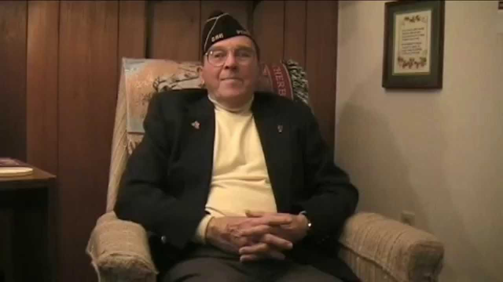
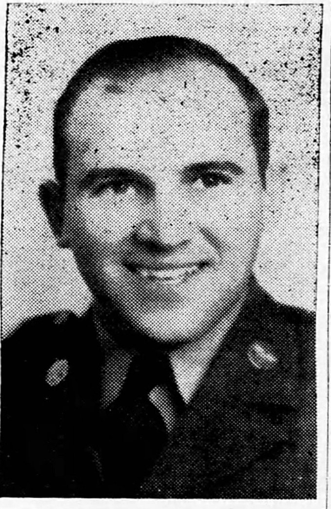
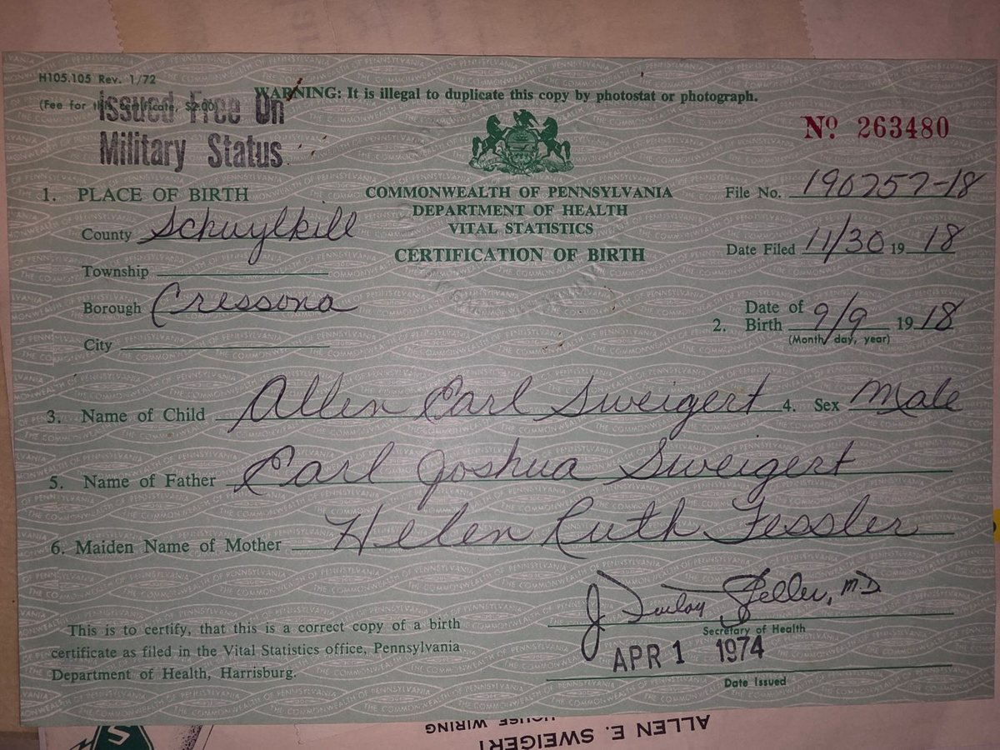
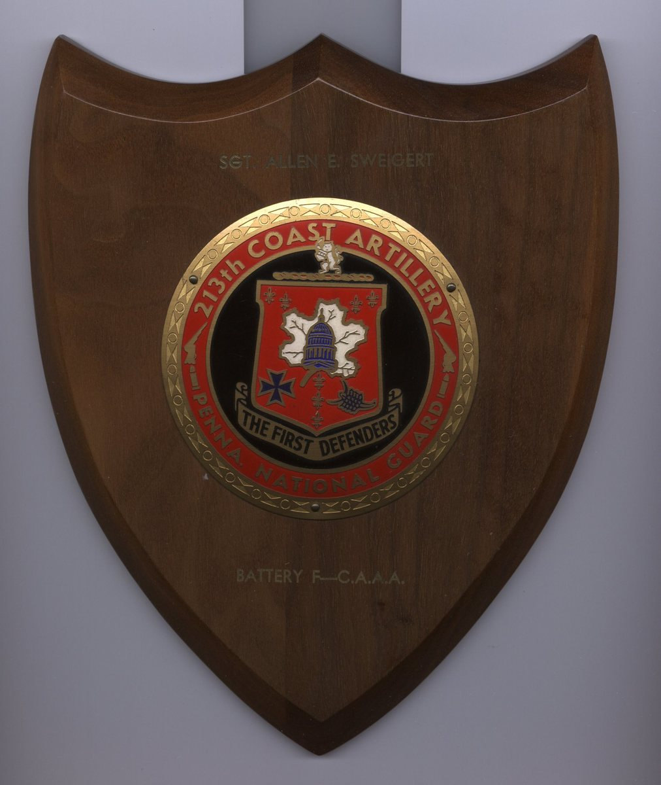
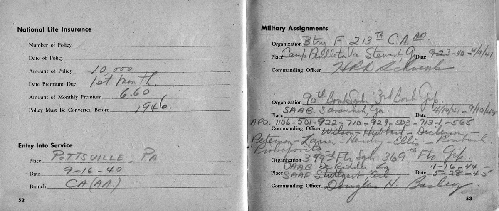
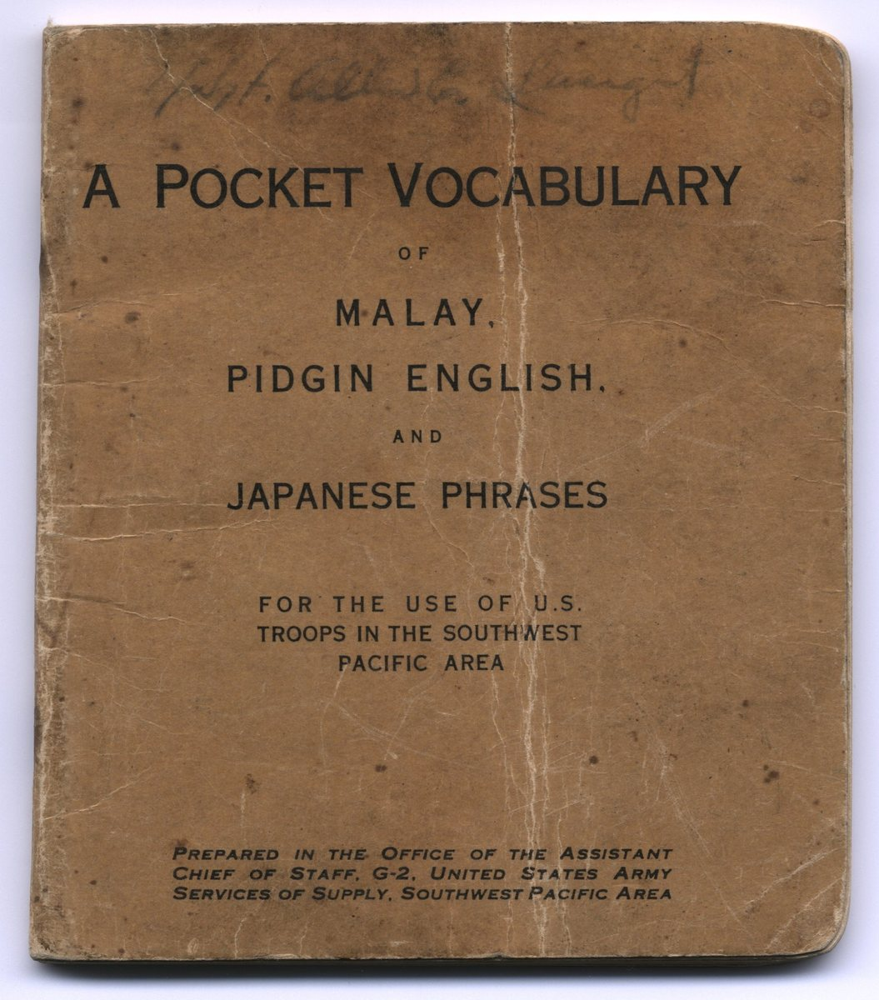
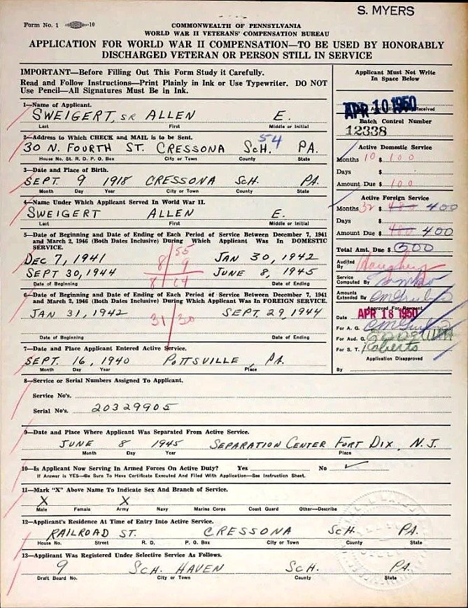
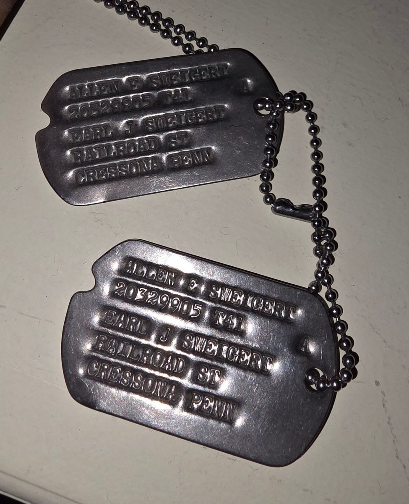
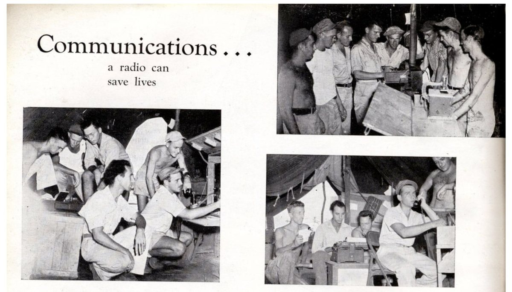

About This Document
his is an illustrated oral history. It grew out of two home-video tapes recorded in July 2006 — Pap's Interview Pt 1.MPG, about 87:04 long, and Pap's Interview Pt 2.MPG, about 14:04 — set alongside more than three hundred photographs and documents from Allen's own WW2-era collection and the wider family archive, and filled out with research into his unit's combat record.
What makes this collection unusual is how completely it survives together, in one family's hands: a first-person account recorded in his own voice; his personal service record book, filled in by his own hand at every posting; his own copy of his group's unit history; the physical artifacts he carried home from New Guinea and Australia — occupation currency, Japanese surrender leaflets, a field phrasebook inscribed with his name, an original issue of the Allied troop newspaper Guinea Gold — two of his actual flight suits, and hundreds of his own wartime photographs, most never printed or shown until now. Nobody keeps a count of how many WW2 veterans' collections hold all of that at once — an oral history, a documented service record, period artifacts, uniforms, and a photographic archive of this size — so there is no honest way to say how rare it is. What can be said is that each of those things is uncommon enough to survive on its own, let alone in one house together.
His Memorial Film
The film made for Allen’s funeral in 2012, put together by his grandson out of the same photographs and interview tapes this history is built from. It plays here in full.

What Is In Here, and Who Made It
Of the 363 pictures in this document, 241 are Allen’s own photographs — taken with the camera he carried overseas, or printed from a negative that was his. More than thirty of those show Allen himself, so somebody else pressed the shutter; they are counted here because the negative came home in his footlocker, and each one says in its caption that he is in it. Another 68 are documents and objects out of his effects: his service record book, his discharge papers, his medals, the occupation currency and surrender leaflets he brought home. 24 are family photographs from before or after the war, including frames from the 2006 interview itself and his grandson Jeremy wearing his coat in 1986.
Eight pictures are not from his hands at all, and every one of them says so where it appears: 6 are pages from the 3rd Bomb Group’s own published unit history, 1 was taken by a squadron photographer, and 1 is a US Navy photograph from the National Archives. The maps and timelines were drawn for this history and say so on their own faces. 2 more are the front and back of one object that had been kept with the wartime papers but is twenty years younger than they are — a 1965 bubble-gum card — and it is labelled that way where it appears.
A further 20 came out of newspapers, and they are the newest part of this document. Sixteen are pages or clippings — two 1942 promotion notices, his own letter home printed in 1942, a wire story from New Guinea, his wedding notice, the chance meeting in Australia as it reached Cressona in 1943, a page of Cressona news from 1956, the sale of the house that paid for the next one, his promotion at the plant in 1958, his appointment to the cemetery committee in 1982, and a full-page Philco advertisement from 1947 with his name at the foot of it. Three are studio photographs that survive only as a newspaper’s halftone of them, his wedding portrait among them; the originals are not in the collection. One is a photograph made by a newspaper’s own staff photographer in 2005, and another by a second staff photographer in 2004; both are credited where they appear. Every one of the twenty is labelled on the page as coming from a newspaper, because none of them is his.
On the censor’s stamp, and what it does not prove. In September 2026 the family photographed the backs of thirty of the prints, because Allen had written on them. Of those thirty, twenty-three carry the US Army censor’s circular handstamp — PASSED BY / BASE / 2415 / U.S. ARMY / EXAMINER — thirteen struck cleanly and ten only partly inside the frame. Seven carry no censor mark at all, and two of those seven are rubber-stamped, in block capitals, DO NOT MAIL.
It would be easy to read those stamps as a record of which pictures were Allen’s own. They are nothing of the kind. Base censorship examined outgoing mail: a passed stamp certifies that, on the day it was applied, an examiner judged that print could go home in an envelope. It says nothing about who pressed the shutter, whose negative the print came from, or whether it was ever actually posted. The War Department’s own instruction sheet for soldiers, Pamphlet 21-1 of 29 July 1943, would not even lay down one rule for photographs; it told a man to go and find out what regulations were in force in his own theatre. The “2415” is most likely the examiner’s own number rather than a base’s, but nothing found so far says whose it was. DO NOT MAIL is noted here simply because it is there; who stamped it, and on whose authority, nobody knows, and it has not been allowed to decide whether a picture is his.
There is a simpler reason so many of these prints carry no stamp, and it comes from Allen himself. He told his grandson he hid them — in his footlocker, under his gear. They were never passed by a censor because they were never shown to one. Instead of going home a few at a time in envelopes, they stayed in the bottom of that locker through Port Moresby, Dobodura, Nadzab and Hollandia, and came back with him in September 1944.
That is worth more than any handstamp. What shows these are his pictures is not the mark on the few that were posted. It is the hundreds he kept out of the mail.
So the count above rests on three things, and not one of them is a handstamp: what the prints themselves are, what Allen wrote on their backs, and what he says on camera — which he put carefully, and is worth repeating in his own words. He carried his own camera the whole way. Of the pictures he kept: “a lot of them that you took, some you got from other people.” The group ran a photo section with two trailer darkrooms, and by his account there was enough film, paper and chemistry in it that any man could print his own. Three kinds of print sit in one album, and the honest answer is that the great majority are his, with a minority coming from the men around him.
The tape is damaged. Pops and dropouts come and go right through it, over sound the 2006 digitization had already thinned: nothing above roughly 6 kHz survived that transfer, and what was lost there is not coming back. Before transcribing, the audio was de-clicked, adaptively denoised, and evened out for loudness.
Source formats, for the record: Allen's two interview tapes survive as DVD-Video (MPEG-2, 720×480, MP2 audio at 48 kHz) — a 2006 digitization of the original analog home-video tape. Catherine's 2013 interview was shot on a digital camcorder as AVCHD (H.264, 1280×720, AC3 audio); a 2018 recording exists as raw HDV (H.264, 1920×1080) with a compressed web export. All transcription used faster-whisper large-v3 on 16 kHz mono audio extracted from these sources; originals and digitized copies remain in the family archive.
The transcript was made by machine (faster-whisper, large-v3) and has not been proofread line by line against the tape. Where the model was unsure of what it heard — almost always where a burst of noise landed on his voice — the words are set in italics. That is a flag, not a correction.
In Part 1, 10 paragraphs out of 216 carry one of those italic stretches. In Part 2, 3 out of 10 do.
A few stutters of the machine's own making were taken out. Faster-whisper is known to repeat a phrase it has just produced and stamp the copy with a duration far too short for anyone to have said it. Telling those apart from a man genuinely saying something twice was left to arithmetic rather than taste: a repeat is kept only if its own duration allows at least 0.15 seconds per word. A handful failed that test and were dropped. Every other word stands.
A few stretches came back badly broken up, and the missing sentence breaks were put back by measuring each fragment's own pause — punctuation only, never a word changed.
Who is speaking is a guess, and it is worth saying so plainly. The tape is a single mixed track from a home camcorder, so nothing in the sound itself separates the two voices. The ALLEN lines and the indented italic JEREMY lines were sorted out by whether a line reads like a question or a prompt, and that fails in one predictable way: when Allen quotes dialogue inside his own story (“he says, what's going to happen?”), the question mark makes it look like Jeremy asking. The family caught 29 lines the text-only guess had back to front, plus the opening exchange, and all of them are corrected directly below rather than left for a reader to trip over; the same correction can still be made anywhere else it's needed.
A few plain mishearings have been put right in the text, on the family's word rather than a guess: the model heard “Allen” as “Alan,” “Scott Field” as “Scottfield,” Allen's nickname for Catherine (“Gram”) as the name “Graham,” and his hometown “Cressona” as “Crescent” — that last checked against his own obituary. No other wording has been changed.
Two more things the model invented were cleaned out, and in both cases the audio's own timing settled it rather than anybody's judgment. One was a stray character from another alphabet altogether — a Korean syllable Whisper glued onto the word “nets” — and a full scan confirmed it was the only such case. The other was a run of eighteen consecutive “and,”s packed into a 0.3-second segment, which no mouth could produce; it was collapsed to two, under the same rule used for genuine repeated speech elsewhere.
The shaded sidebars step away from the tape to fill in the history around it — the 3rd Bomb Group, the Battle of the Bismarck Sea, the Hollandia campaign, and the wartime artifacts Allen brought home — and each cites the public sources it draws on where it appears. The book layout on the section-divider pages deliberately echoes Allen's own copy of ‘The Reaper's Harvest,’ the 3rd Bomb Group's unit history book, a scan of which appears later in this document.
About Allen E. Sweigert, Sr.

orn September 9, 1918, in Cressona, Pennsylvania, a son of Earl J. and Helen R. (Fessler) Sweigert. He graduated from Cressona High School in 1936, in the midst of the Depression, and enlisted that same year in the Pennsylvania National Guard — Battery F, 213th Coast Artillery (Anti-Aircraft), “The First Defenders,” a Pottsville-based unit whose roots run back to the first companies that answered Lincoln's 1861 call for troops. He entered federal service at Pottsville, PA, on September 16, 1940, and was mobilized to Camp Pendleton and Camp Stewart, in Virginia and Georgia. He asked for his discharge from the Guard, took it, and enlisted in the Air Corps at Savannah, Georgia, on April 10, 1941. He was assigned to the 90th Bomb Squadron, 3rd Bomb Group — the “Grim Reapers” — and sent to radio school at Scott Field, Illinois, before returning to his squadron. He served with the 90th in New Guinea and Australia through September 1944, rising to master sergeant, in a unit that pioneered low-level B-25 strafing tactics. He came home stateside, and from November 1944 to May 1945 served with the 399th Fighter Squadron, 369th Fighter Group.
He married Catherine S. Kline on October 14, 1944, a week after coming home from the war. The couple settled in Cressona, where Allen went first to Coyne Electrical School in Chicago, graduating in January 1946, and then home to put his Army radio training to work running his own shop, “Allen E. Sweigert: Radios, Electrical Appliances,” on Chestnut Street. He began an apprenticeship at the Alcoa works in Cressona in the autumn of 1947 and spent the rest of his working life there as an electrical foreman, retiring in 1977. He was a member and property committee chairman of St. Mark's United Church of Christ, Cressona; a charter member and past president of the Cressona Lions Club, recipient of its Melvin Jones Fellow Award; and a sixty-year member and past commander of American Legion Post 286, Cressona. He and Catherine raised two sons, Allen E. “Buddy” Jr. (1947–2020) and John S., and had two grandchildren, Jessica M. and Jeremy A. Sweigert. Allen Sr. passed away March 29, 2012, at 93, at Schuylkill Medical Center, and is buried with military honors in Cressona Cemetery.


A Life in Brief
How to read this, and what the marks mean
- A filled diamond is a date from a document — a service book, a discharge paper, a state form.
- A blue diamond is a date from a newspaper printed at the time.
- A brass diamond is a date from his own letter home, written in Australia in May 1942. There are only a handful, and they are the best dates in the document.
- A hollow diamond, with the entry in italic, is Allen himself, remembering in 2006. The italic is there so the distinction survives a photocopier.
- A dashed outline is family memory.
- A diamond is a day. A bar is a stretch of time — a month, a season, a year, or a run of years — drawn to the length the evidence actually covers, so “spring 1942” is not pretending to be the fifteenth of April.
- The rail at the left runs to scale and the rows do not. Where the brackets fan out, his life was crowded; where they run straight across, it was not.
- The brass bar with a label beside it is a scale stick: it shows how much time one length of rail is worth on that panel, which differs from panel to panel.
- Sixty-two entries across the whole life. The years from 1936 to 1946 carry more than eighty in the record; only the turning points are drawn here.
His Military Record, In His Own Handwriting
Transcribed from Allen's personal service record book, which he filled in himself during the war.
| Organization | Place | Dates | Commanding Officer(s) |
|---|---|---|---|
| Battery F, 213th Coast Artillery (A.A.) | Camp Pendleton, VA → Camp Stewart, GA | 9-23-40 to 4-10-41 | H.R.D. Schwenk |
| 90th Bomb Squadron, 3rd Bomb Group | SAAB Savannah, GA → overseas (APOs 1106, 501, 922, 710, 929, 503, 713-1, 565) | 4-10-41 to 9-10-44 | Wilson – Hubbard – Dickerson – Peterson – Lasner – Hendry – Ellis – Kretzsch – Priboroski |
| 399th Fighter Squadron, 369th Fighter Group | DAAB DeRidder, LA → SAAF Stuttgart, AR | 11-16-44 to 5-28-45 | Douglas N. Bagley |
Full names for five of the commanding officers Allen listed by surname, found in the 3rd Bomb Group's own published unit history: Wilson is 1st Lt. Bennett G. Wilson; Hubbard is Lt. Col. Ronald D. Hubbard; Dickerson (Allen's own spelling) is Maj. Wesley E. Dickinson; Peterson is Maj. Raymond T. Peterson; Ellis is Lt. Col. Richard H. Ellis. Lasner, Hendry, Kretzsch, and Priboroski were not found in that source's decorations roster and remain surnames only.


His Discharge Papers

His official “Enlisted Record and Report of Separation,” issued at the Separation Center, Fort Dix, New Jersey, June 8, 1945 — the government's own record, alongside his personal one above.
![Serial No. 20 329 905; Military Occupational Specialty, Communication Chief (542); campaigns credited: Bismarck Archipelago, East Indies, New Guinea, Northern Solomons, Papua (GO 33 WD 45); decorations: Good Conduct Medal (GO 3, Hq 3d Attack Gp, 2 Aug 43), American Defense Service Medal, and Distinguished Unit Badge (GO 3, Hq 3d Attack Gp, 25 Mar 44). Departed for the Southwest Pacific Theater January 31, 1942; arrived back in the USA September 29, 1944 — 2 years, 7 months, 29 days of foreign service. Separated for the “Convenience of the Government,” mustered out with $300 plus $42.20 travel pay.](images/disp/discharge-paper-968267d4.jpg)




![A B-25 Mitchell low over open water, photographed from another aircraft. The fin carries <b>11290[2]</b> -- the tail number for serial 41-1290[2], a B-25C from the same production block as Spook II, 41-12969. The national insignia is a plain white star in a disc with no side bars, which dates the frame before the end of June 1943, when the bars were added.](images/thumb/08040035-4d93330d.jpg)


![Crewmen standing at attention in front of a field-modified B-25 strafer. All that survives of her name is a Roman <b>II</b> in white serif capitals with a bar above and below; the word in front of it is cut off by the top edge of the print, and shark-mouth teeth show in the top left corner. She is Spook II. Another print in this collection shows the same nose from a little lower, with the word SPOOK standing above that same II; here the top edge of the paper has cut it off. This caption used to call her](images/thumb/08060050-db3c5fe2.jpg)


![A Curtiss P-40 -- a single-engine low-wing fighter with an inline liquid-cooled engine and a tailwheel -- standing on a grass field, its fuselage and upper wing painted with large white crosses and its fin and rudder in broad stripes. A cargo truck is parked at the left behind the tail; at the right, in front of a long open-sided shed, stand a truck fitted with a boom and further aircraft carrying the same white markings, one of them cut by the edge of the print, with pine woods along the far edge. Its back is rubber-stamped](images/thumb/pap-20260924-052933-3e985d3d.jpg)


![A narrow strip of a photograph showing a parked bomber from the side -- a wing running out to the left with its tip toward the camera, the framed cockpit glazing and a rounded engine cowling below it, and a large plain white star national insignia, with no bar, further aft on the fuselage. One man in light clothing stands at the wing root beside the engine, and a low treeline runs behind the aircraft. No name is written on the back; the reverse carries only the censor stamp "PASSED BY / BASE / 2415 / U.S. ARMY / EXAMINER".](images/thumb/pap-20260924-053148-361557b5.jpg)


![A serviceman in light khaki, his back to the camera and a flap pouch on his belt, stands over a heaped dump of captured Japanese weapons: machine guns with ribbed and perforated barrel jackets, bipods folded beneath them, flared muzzle cones and top-mounted feed housings, piled shoulder-high at the back. Around the foot of the pile lie large flat drum magazines pierced with a ring of holes, faceted metal ammunition canisters, loops of belted ammunition and light wooden crates -- some packed with loose cartridges, one stencilled with a single character that appears to be Japanese. Empty fuel drums stand in the grass behind.](images/thumb/pap-20260924-080952-ca5f7649.jpg)


![A gathering on cleared, trampled ground with tall thin trees behind: twenty or more people in long cloaks and skirts of hanging fibre, several of them carrying bundles taller than themselves -- broad, curved and tapering to a point, possibly rolled matting or sheets of bark -- up on the shoulder. A child of about ten stands square to the camera in the foreground in a fibre cape and skirt, holding a tall thin staff, with others holding staffs behind. Two men in light shirts and trousers stand watching at the left, and the crowd runs away up the rise to the tree line. The print does not say where this is or what the occasion was.](images/thumb/pap-20260924-081007-8ab267d9.jpg)


![A serviceman in one-piece coveralls and a pith-style sun helmet stands hands-on-hips on cleared ground, a web belt at his waist with a dark holster at his left hip, felled timber and dense bush behind him. The back carries a single signature read as "Haskin[?]" -- Haskins or Hoskin are also possible -- with "N. G." for New Guinea, and the censor stamp "PASSED BY / BASE / 2415 / U.S. ARMY / EXAMINER."](images/thumb/pap-20260924-053055-e8745dc1.jpg)


![A young man sits smiling for the camera in a light open-necked shirt with breast pockets and turned-back sleeves, a belt at his waist and his hands folded in his lap, with the white sleeve of a second man at the right edge of the print. The back gives the surname as "Hoskins[?]" with the given name clipped by the frame, and beneath it "Galveston, Texas"; the censor stamp reads "PASSED BY / BASE / 2415 / U.S. ARMY / EXAMINER".](images/thumb/pap-20260924-053234-bc985ccf.jpg)


![A young man sits square to the camera in a light open-collar work shirt with a flapped breast pocket, arms low in his lap and the arms of the men on either side cropped at the edges of the print. Named on the back as James Frenell[?] of Cairo, Illinois -- the surname is drawn F-r-e-n-e-l-l and Fennell may be the intended spelling.](images/thumb/pap-20260924-053328-1a47a25e.jpg)


![Taken by a squadron photographer, not by Allen: Bob Hope on stage, pith helmet and all, at the 90th Squadron's own Hollandia base. A squadron photographer, Jack, took it and five others of the same show (Frances Langford, Jerry Colonna, Patty Thomas, Judith Anderson) and shared them decades later on the 3rd Bomb Group's own history website — Allen's own unit, at a base he himself confirms landing at later in this interview. It isn't certain this is the very performance Allen attended, but it's the 90th Squadron's own Bob Hope show, photographed from the crowd he would have been standing in.Source: OzAtWar (Peter Dunn, ozatwar.com), photo courtesy of Jack, a 90th Squadron veteran.](images/disp/bobhope-hollandia-ozatwar-c03f42ac.jpg)


![The front page of the Allied forces' field newspaper "GUINEA GOLD", the masthead marked "NORTHERN EDITION (AMERICAN)" and the line beneath it reading "Vol. 2. No. 96.", "In the Field, Tuesday, February 22, 1944" and "NOT FOR SAL..." where the sheet is trimmed. The lead headline runs "19 Enemy Ships Sunk, 201 Planes Destroyed In First Two Days Of Assault On Truk", with side columns headed "Jap Army & Navy Chiefs Sacked", "Mighty Allies For 'Return To Tokio'" and "STOP PRESS", a second banner on Anzio, and a single halftone photograph captioned "DEATH SCENE".](images/thumb/guinea-gold-pg1-e805dde0.jpg)
![A single sheet of hand-brushed Japanese text in vertical columns of kanji and katakana, read right to left, headed 皇軍將兵ニ告グ -- an address to the officers and men of the Imperial Army. The body invokes the 戰陣訓 field-service code and argues that with rations gone, the men worn down in the jungle and the high command's plans miscarried, there is no shame in surrender -- 降ルモ恥ナシ -- and that to remain is only 徒死, death in vain; it is an appeal urging Japanese troops to give themselves up rather than a personal letter, and it bears no signature, seal or unit mark to show who wrote it.](images/thumb/japaneese-letter-not-sure-8393a715.jpg)


![A leaflet printed in Tok Pisin beneath the Australian coat of arms, headed "OL BOI BILONG KIAP BILONG BIK NUKINI / LUKAUT." and continuing "MIPALA KARIM PAIT LONG HAP BILONG YUPALA NAU. RAUSIM MERI NAU PIKININI LONG PLES. NAU HAIT LONG BUS. NOGUT BOM IKILIM OL ONTAIM JAPAN. YUPELA MAN WAITIM TOK BILONG POLISBOI NAU SOLDIA BILONG MIPALA." and closing "TOK BILONG GAVMAN." -- a warning that the fighting is coming to the reader's area, to take the women and children out of the village and hide in the bush, and to wait for word from the government's police and soldiers; "P10" is pencilled at the upper right.](images/thumb/pap-20260924-051105-d0245ee7.jpg)


![The front of card 34 of Topps’ “Battle” set, issued in 1965 — twenty years after the war, not during it: a painted jungle scene captioned "SAVING HIS BUDDIES" in a yellow banner at the top right. At the left a man plunges head-first from a tree, hands reaching down; at the centre a soldier in a peaked field cap marked with a red disc, a red sunburst on his sleeve, holds a bolt-action rifle across him; and at the right a bareheaded man and a man in a steel helmet sit propped together, with a further bandaged arm running off the right edge of the crop.](images/disp/pap-20260924-051151-c0754d9e.jpg)